課題と選定アプローチ
⚠️ 課題
- 課題: 軸・軸受・回転部品が軸の回転とともにずれてしまう
- 用途: 1MW級陸上風力発電プラント
- 軸長設計仕様: $L = 2[\text{m}]$
- 材質: 大型鍛造合金鋼（SCM440 / 42CrMo4 [焼き入れ・焼き戻し処理]）
⚙️ 選定の手順と工夫点
- プロセス: 軸径の決定 $\rightarrow$ 軸受（ベアリング）の選択（種類，軸径） $\rightarrow$ ずれを抑える基本構造の検証・検討
- 工夫点: 軸径を算出し，ベアリングの構造特有の違いおよび風力発電の荷重環境特性を深く理解したうえで，適切な寸法でかつ風力発電に最適化された「自動調心ころ軸受」を選定した．さらに，固定するために，アダプタスリーブ・座金・ロックナットを使用した．
設計計算：軸径の算出
📊 前提条件（1MW級陸上風力発電）
📐 複合荷重の算出式
1. 軸にかかるトルク $T$:
2. 風によるスラスト力（横方向の荷重） $F_t$:
空気密度: $\rho=1.225[\text{kg/m}^{3}]$, 推力係数: $C_{T} \approx 0.8$, 羽の長さ: $R=60[\text{m}]$, 面積: $A[\text{m}^{2}]=\pi R^{2}=11309.73[\text{m}^{2}]$
3. 曲げモーメント $M$:
⚡ 相当モーメント・断面係数
相当ねじりトルク $T_e$:
相当曲げモーメント $M_e$:
断面係数 $Z$ & 極断面係数 $Z_p$:
導出根拠:
🧠 応力基礎式
最大主せん断応力 $\tau_{\max}$:
最大主応力 $\sigma_{\max}$:
🛡️ 安全率の選定及び許容応力の算出
安全基準として 安全率 $S = 5$ とする．さらに，大型鍛造合金鋼の降伏点を $\sigma_{y} = 850[\text{MPa}]$ とする．
| 材料区分 | 静荷重 | 繰り返し荷重（片振り） | 繰り返し荷重（両振り） | 衝撃荷重 |
|---|---|---|---|---|
| 鋼 (Steel) | 3 | 5 | 8 | 12 |
| 鋳鉄 (Cast Iron) | 4 | 6 | 10 | 15 |
| 銅・アルミ (Copper/Aluminum) | 5 | 6 | 9 | 15 |
許容ねじり応力 $\tau_{al}$: $$\tau_{al} = \frac{\tau_{y}}{S} = \frac{491}{5} = 98.2[\text{MPa}]$$
■ 最大主せん断応力基準による必要軸径算出 ($\tau_{\max} = \tau_{al}$):
■ 最大主応力基準による必要軸径算出 ($\sigma_{\max} = \sigma_{al}$):
最適な軸受(ベアリング)の選定
🏆 「自動調心ころ軸受」(NTN社製)の採用
様々な軸受（深溝玉軸受・アンギュラ玉軸受・円筒ころ軸受・円すいころ軸受・針状ころ軸受）の中から，風力発電には自動調心ころ軸受が適切だと判断した．
【自動調心ころ軸受を選定した理由】
- 風車ブレードの回転による軸ねじりモーメントへの耐性
- 風向の変化に伴い変動する，左右方向への力（アキシアル荷重）の支持
- 巨大なラジアル荷重及びアキシアル荷重の同時負荷能力
- 軸のたわみや据付誤差の自動吸収・緩和
🗺️ 風力発電の構成と荷重特性
| 位置番号 | 構成 | 軸受タイプ |
|---|---|---|
| 1 | ローター主軸 | 自動調心ころ軸受 |
| 2 | 増速機 | 単列円筒ころ軸受 / 円すいころ軸受等 |
| 3 | 発電機 | 深溝玉軸受 / 円筒ころ軸受 |
| 4 | ヨー駆動部 | 円すいころ軸受 / 4点接触玉軸受 |
| 5 | ピッチ駆動部 | 4点接触玉軸受 |
【軸受等価荷重の評価基礎式】
$\frac{F_a}{F_r} \le e$ または $>e$ に応じて係数 $X, Y$ を決定
$e, Y_1, Y_2, Y_0$ の値はメーカー規格表に準拠
| シリーズ | 主要寸法 (mm) | 基本定格荷重 (kN) | 疲労限荷重 Cu | 許容回転速度 (min⁻¹) | 取付関係寸法 (mm) | アキシアル荷重係数 | 質量(kg) | |||||||
|---|---|---|---|---|---|---|---|---|---|---|---|---|---|---|
| d | D | B | Cr | C0r | グリース | 油 | da(min) | Da(max) | e | Y1 | Y2 | 円筒穴 | ||
| 230/530B | 530 | 780 | 185 | 3350 | 4850 | 710 | 490 | 380 | 558 | 752 | 0.22 | 3.03 | 4.52 | 306 |
| 240/530B | 530 | 780 | 250 | 6200 | 12700 | 700 | 450 | 330 | 558 | 752 | 0.30 | 2.24 | 5.55 | 400 |
| 231/530B | 530 | 870 | 272 | 7800 | 14200 | 920 | 400 | 310 | 566 | 834 | 0.30 | 2.22 | 3.30 | 653 |
軸受の仕様
📐 シリーズ：NTN 230/530B
固定用パーツ
軸受の軸方向へのずれを拘束し，締結する．
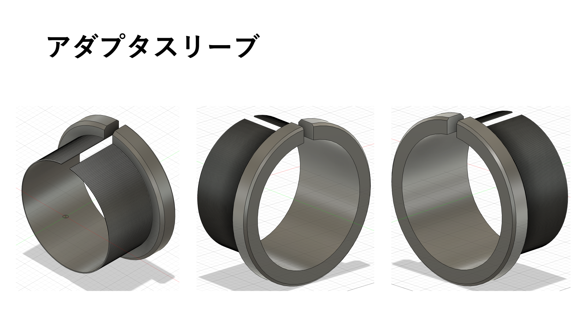
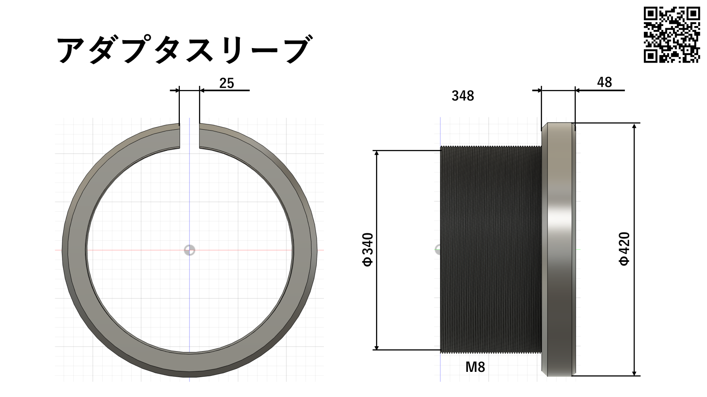
アダプタスリーブ
- 特徴: 軸と軸受を摩擦によって締結するため，強度・靭性が要求される．
- 選定材料: SCM440
- 寸法: 写真参照
- 製造・熱処理工程: 鍛造 $\rightarrow$ 焼ならし $\rightarrow$ 旋削加工 $\rightarrow$ 内径加工 $\rightarrow$ 外ねじ加工 $\rightarrow$ 焼入れ・焼戻し $\rightarrow$ 内径研削仕上げ
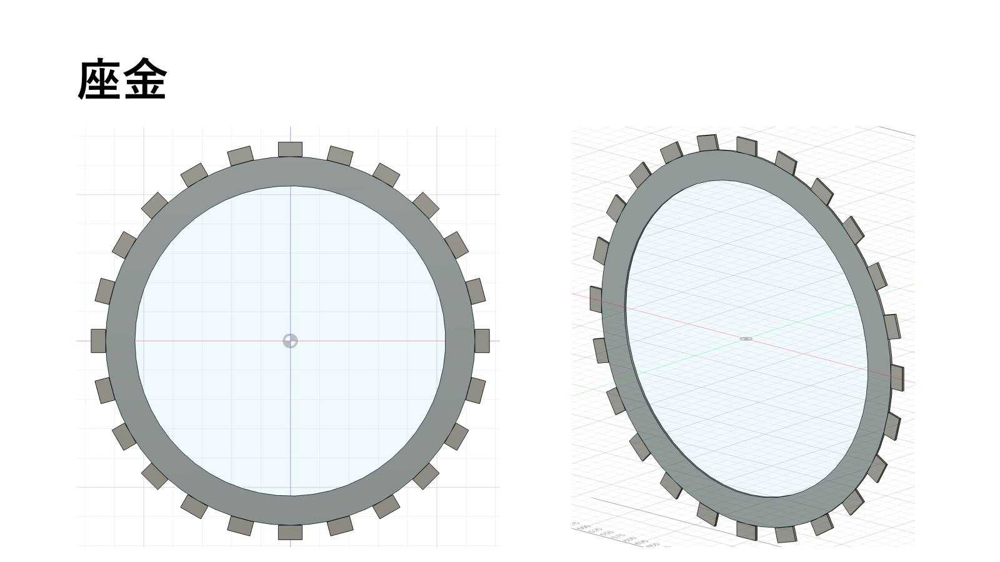
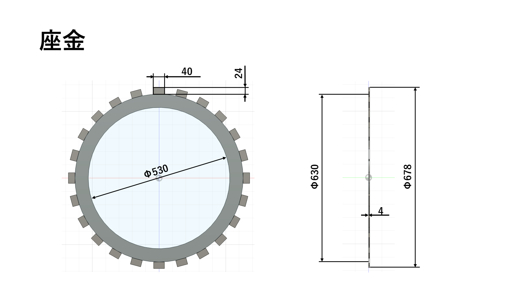
座金
- 特徴: 回止め爪を繰り返し曲げても折れにくく，理想的な弾性状態を維持できる．
- 選定材料: S60C (高炭素鋼)
- 主要寸法: 写真参照
- 製造・熱処理工程: 鋼板材料 $\rightarrow$ 精密プレス打抜き $\rightarrow$ 穴あけ加工 $\rightarrow$ 曲げ成形加工 $\rightarrow$ 焼入れ・焼戻し
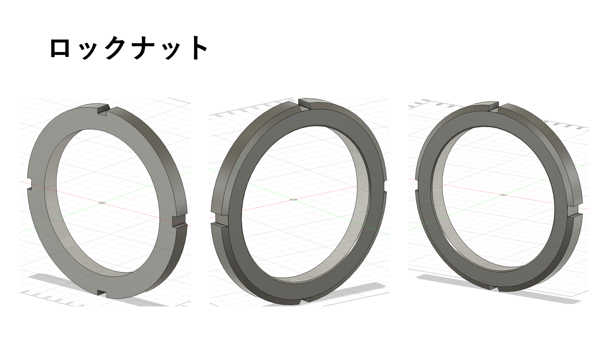
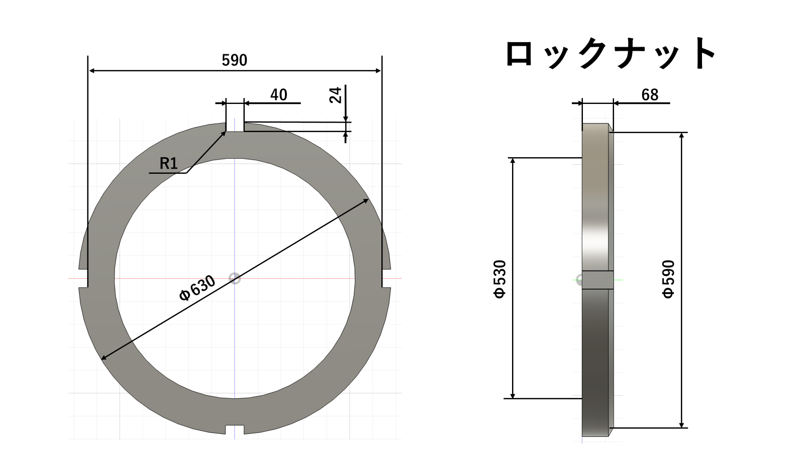
ロックナット
- 特徴: 大きな締付け力を受けるため，一定の疲労強度が必要
- 選定材料: SCM440
- 主要寸法: 写真参照
- 製造・熱処理工程: 鍛造 $\rightarrow$ 旋削加工 $\rightarrow$ 内ねじ加工 $\rightarrow$ 調質処理
自動調心ころ軸受の取り付け
ステップ 1: スリーブの初期配置
軸にアダプタスリーブを挿入する．
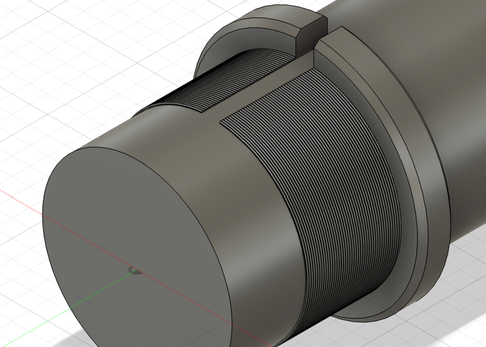
ステップ 2: 潤滑剤の塗布
鉱油をアダプタスリーブの外径・ネジ部・ロックナットのネジ部・軸受側側面に塗布する．
ステップ 3: 軸受の取り付け
自動調心ころ軸受本体をアダプタスリーブにまっすぐ挿入し取り付ける．
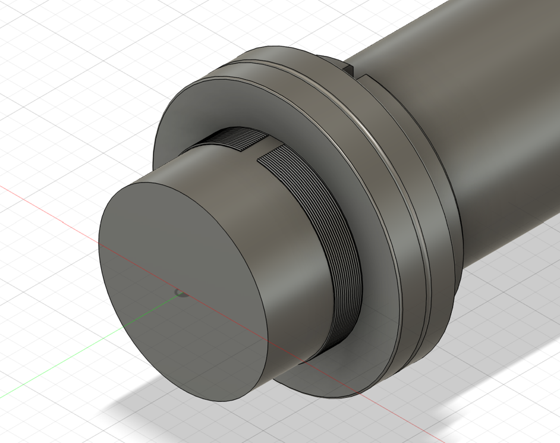
ステップ 4: ころ姿勢の安定化
軸受を回転させ，ころの姿勢を安定させる．
ステップ 5: 座金の装着
座金を取り付ける．
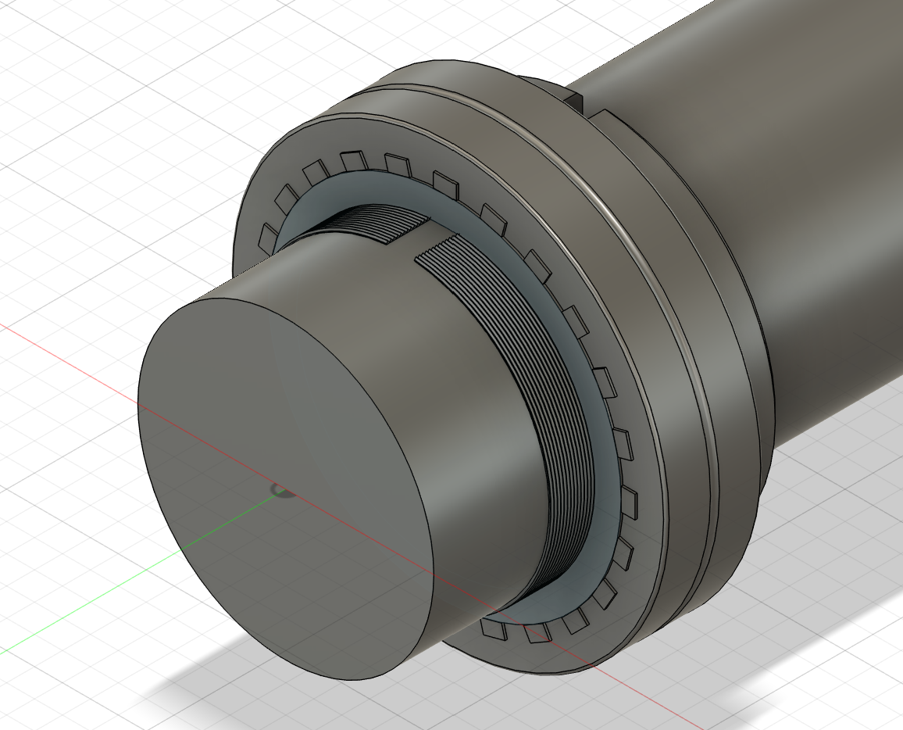
ステップ 6: ロックナットの取り付け
ロックナットをラジアル内部すき間の減少量に達するまでアキシアル方向へ押し込む．
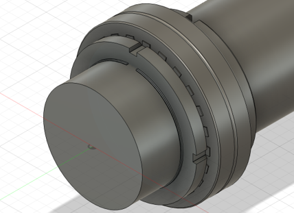
ステップ 7: 位置の確認
ロックナットの切り欠き太座金の回止め爪の位置を確認する．
ステップ 8: 爪の折り曲げ＋ロック
座金の回り止め爪をロックナットの切り欠き溝内へ折り曲げ，固定する．（緩み・変位の完全防止）
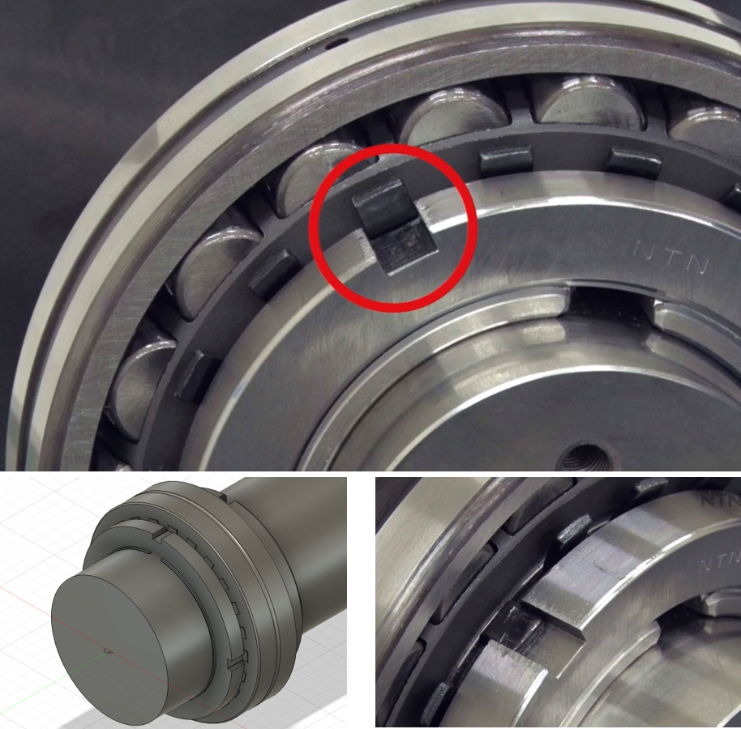
完成図
完成図 1
※ベアリング形状は簡易的に表現している
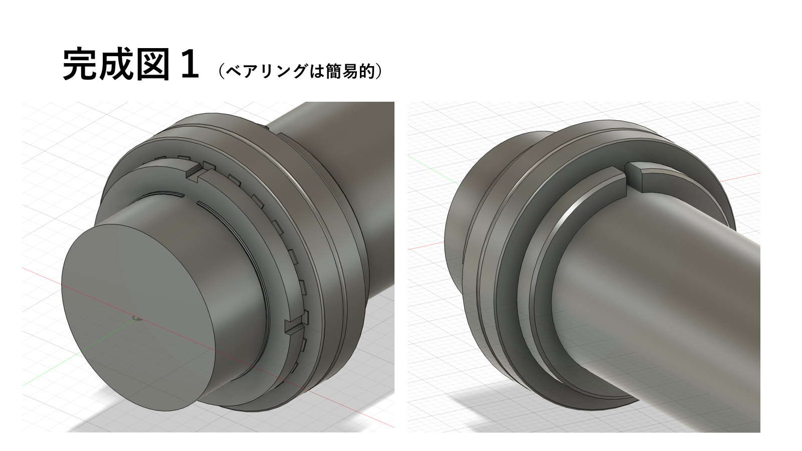
完成図 2
※ベアリング形状は簡易的に表現している
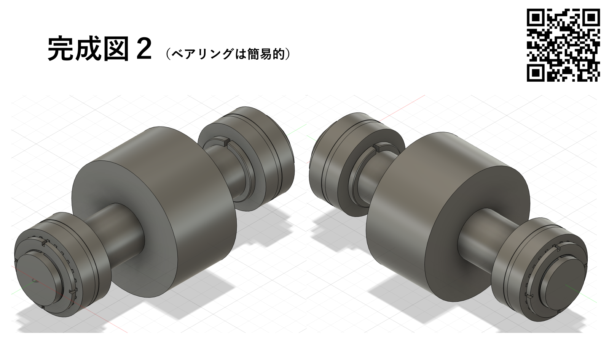
📚 参考文献・規格準拠元
- 『SCM440, SCM440Hとは【硬度・比重・ヤング率・熱処理】と使い方』 機械設計技術データベース
- 『自動調心ころ軸受総合カタログ』 NTN株式会社 発行
- 『風力発電用高信頼性軸受テクニカルガイド』 日本精工株式会社 (NSK) 発行